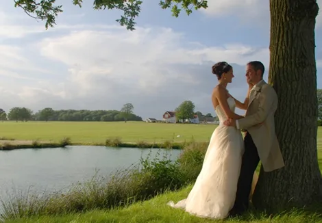

Home / Recent Events
Recent functions & private dinner parties
Real menus from real events: conferences, weddings, birthdays, company picnics and dinners cooked at the beach house and the lake house.
Austrian menu for a Book Publishing Party
Menu
- Wild Mushroom Strudel with Mountain Honey and Toasted Walnut Dust
- Seafood Meunière Pastry Cups
- Herb Crusted Pork and Bacon Cubes
- Schnitzel Strips with Lemon and Capers
- Chicken and Thyme Roulade with Raspberry Sabayon
- Gnocchi with Sage, fresh Curd, Spinach and Tomato Basil Coulis
- Liptauer, a spicy cheese spread with French Bread Croutons
- Fire Roasted Sausage, Cabbage and Onions with Caraway
- Grilled Asparagus, Mushrooms and Roasted Pimentos
- Pear Brownies
- Sachertorte
Sustainability in Agriculture and Natural Resources Conference
60 guests, Holtzman Alumni Center Terrace, Hahn Gardens and the Catawba Center.
Thursday opening reception: heavy appetizers, $20 per person
- Bar Snacks: Our Famous Pepperoni Baked Nuts
- Black Eye Pea Cakes with cilantro crème and smoked chili salsa
- Fresh In-house Made Mozzarella, Fresh Basil and Local Tomato
- Local Spinach and Sun Choke (Jerusalem Artichoke) dip with local bread crouton rounds
- Local Vegetables grilled, pickled and raw… Crudités with complimentary dressing
- Grilled Local Asparagus and Green Beans with “Benne” sesame
- Fried Green Tomatoes with Balsamic Reduction and local Goat cheese
- Mini Local Buffalo Burgers with our homemade apple ketchup
- Dressed up Surry “Pig in a Blanket”: Edwards of Surry Smoked Sausages dressed in Onion Biscuit Dough
- In House Smoked Local Farm Raised Trout & Tilapia Platter with fine diced red onion, capers, and dill sour cream
- Mini Corn Pudding Cakes with Spinach, Local Cheese, and Fresh Herbs
- Fresh Local Fruit salad with local honey and fresh mint
- Assorted Local Cheeses and Local Artisan Breads Tasting
- Local Wild Mushroom Strudel with Toasted Pecan Honey
- Herbed Cheese and Smithfield Ham Biscuit Bites (some vegetarian, no ham)
- BBQ Local Pork and Red Mustard Greens Egg Roll with spicy chili garlic sauce
- Local Apple & Cherry Cobbler
- Assorted Cookies and Brownies
Friday breakfast, $10 per person
- Whole Fresh local Fruit (apples, plums, pears, etc.)
- Granola and Fruit Bars with local Fruit Pies (local made and individually wrapped)
- Local Fruit Salad with Mint and Local honey
- Mini Muffins (zucchini-walnut, blueberry, strawberry, pumpkin, etc.) made with local Flour and Guinea Eggs
- Sweet Potato Biscuits, some with grilled vegetables and some with Smithfield Ham and Edward’s Sausage
Friday lunch at the Hahn Gardens, $15 per person
- Grilled Garden Sandwiches (example: spinach, pine nuts, red onion, mushroom, local goat and cheddar cheese)
- Arugula Blue Cheese Cole Slaw
- Fire Grilled Pizza with Homemade Mozzarella, Vine Ripe Heirloom Tomatoes, and Fresh Basil Pesto
- Local Sweet Sausage, grilled with Fennel, Onion, Peppers, local Red Mustard Greens and homemade Gnocchi made with Collard Greens and Floyd Creamers (potato)
Saturday lunch, $15 per person
- Local Buttermilk Braised Local Farmed Cobia (if available, if not Tilapia or Salmon) with Local Cherry-Peach-Sage Salsa
- Sesame Green Beans
- Honey Rosemary Carrots
- Wild Rice with Leek, Pecans and Fresh herb Vegetable Stock
- Sautéed Apples and Local Chanterelle Mushrooms with Tarragon
- Fresh Local Mixed Field Greens with Apple Cider-Shallot Vinaigrette
- Assorted Cookies and Brownies
Closing reception, $20 per person
- Pepperoni Baked Nuts
- Baked Brie with Local Apricot Jam
- Cream Cheese and Red Pepper jelly
- Spinach and Artichoke Dip
- Assorted Crackers
- Crispy Plantain Chip with Red Lentil Dip
- Crispy Celery, Carrot, Cauliflower, Broccoli
- Olives, Pickled Vegetables and Spiced Peaches
- Parmesan-Tomato-Mozzarella Bruschetta on French Bread Croutons
- Free Range Chicken Roulades
- Vegetarian Eggrolls with sweet and sour sauce
- Spinach and Feta in Filo
- Mini Assorted Muffins
- Pineapple, Mango, Orange, Grapefruit and Apple Salad with Toasted Pecans and Walnuts
Folly Beach, SC Birthday Party
Heavy hors d’oeuvres, $25 per person, served as a dinner.
Menu
- Bar Snack: Baked Pepperoni Mixed Nuts
- Coconut Grouper with Brown Butter Rum Sauce
- Home Fried Taro Chips (Plantain, Yucca, Taro Root, etc.) with Jamaican Jerk-Molasses Black Bean, Fresh Pineapple Salsa, and Spinach-Artichoke Dip
- Cashew-Herb Crusted Chicken Fingers
- Sweet Chili Garlic Shrimp and Cream Cheese with French Bread Croutons
- St. Barts Flame Roasted Pork Loin
- Cuban Mojo Pulled Pork with Soft Rolls
- Grilled Asparagus, Sesame Green Beans and Caramelized Ginger Baby Carrots
- Fresh Fruit Salad with Fresh Mint and Tupelo Honey
- Grilled Shrimp with Avocado, Tomato-Basil Salad
- Baked Brie Stuffed with Nuts & Guava
- Mini Crab Cakes
The Williams Wedding, Charleston
Passed apps and dinner buffet as heavy hors d’oeuvres with stations, $32 per person.
Passed appetizers
- Crab Cakes with Remoulade Sauce
- Black Eye Pea Cakes with Cilantro Sour Cream
- Fresh Mozzarella, Tomato Basil Skewer with Reduced Balsamic Dip
- Mini Grilled Tuna Salad Sandwiches
- Mini Tart Shell Sun Dried Tomato Basil Cheese Cake
- Wild Mushroom Strudel with Toasted Pecan Honey
- Seared Tuna on Crispy Wonton with Spicy Shallot-Cilantro Sauce
- Vegetarian Egg Roll with Sweet Chili Garlic Sauce
- Crispy Tuna Rolls with Wasabi-Soy Dip
- Grilled Rack Lamb “Lollipops” with Mint Pesto
Stations
- Old Bay Boiled Shrimp with Smoked Tomato Cocktail Sauce, Spinach and Artichoke Dip, Charleston Crab Dip
- Shrimp and Grits with Tasso Gravy; Smoked Pulled Pork with red and yellow BBQ sauces; Blue Cheese Coleslaw; Roasted Greek Potatoes
- Carving Station: Charred Argentinean Style Beef Loin with Chimichurri and Béarnaise; Cider Cured Young Turkey Breast with Apple-Cranberry Relish
- Kid’s Station: Mini Cheese Burgers, Cheesy Mac and Cheese, PB&J, Grilled Cheese, Strawberries and Grapes, Mini Brownies and Cookies
Goat Island Wedding
October 10, Goat Island. $26.00 per person. Food $3,900.00; staffing estimate $500.00 (4 person staff, 5 hours). We have our own boat: no charge. Total for food and labor $4,400.00. Bar open at 4pm, reception at 5pm.
Station One: Frogmore Shrimp Boil
- Red Bliss Potatoes, Corn, Sausage, Local White Shrimp, and Live Crabs for flavor: a manned station with the history of the dish and a demonstration of how to eat it
Station Two: Lowcountry Sampler
- Crab Cakes with Remoulade Sauce
- Black Eye Pea Cakes with Cilantro Sour Cream
- Spinach and Artichoke Dip, Charleston Crab Dip
- Sesame Green Beans, Grilled Asparagus and Grilled Mushrooms with Roasted Red Peppers
- Sweet Potato Herb Biscuits
Station Three
- Smoked Pulled Pork, Blue Cheese Coleslaw, rolls and sliced bread
- Grilled Mojo Herb Chicken Breast Medallions
- Red and Yellow BBQ Sauces
Station Four
- Fruit Salad with Fresh Mint and Tupelo Honey
- Fresh Tortellini, Fresh Mozzarella, Tomato, Basil and Baby Greens Salad
- Sushi and Grilled Tuna with Wasabi-Soy Sauce
- Pecan Crusted Salmon and Grouper with Lemon Beurre Blanc
- Vegetable Egg Rolls and Sweet Chili Garlic Sauces
- Mini Herb Burgers on Hawaiian Bread
Collier Company Picnic at the Beach
60 adults at $34 and 20 children at $15. Staffing at $25 an hour (bartenders, servers and a culinary carver); bar set up at $3.50 per person.
Menu
- Bar Snacks: Pepperoni Baked Nuts and Taro Chips
- Passed appetizers including Crab Cakes, Black Eye Pea Cakes, Seared Tuna on Crispy Wonton and Grilled Rack Lamb “Lollipops” (Frenched bone lamb rack cut to one bone: you pick it up by the bone)
- Station One: Old Bay Boiled Shrimp, Charleston Crab Dip, Spinach and Filo Triangles
- Station Two: Shrimp and Grits with Tasso Gravy, Smoked Pulled Pork
- Carving Station and Kid’s Station
Bar set up
- Coke, Diet Coke, Sprite, Ginger ale, OJ, Grapefruit, Cranberry, Soda and Tonic, Lemons, Limes, Margarita Mixer, Stirrers, Beverage Napkins, Plastic Cups, ice
- Sweet Ice Tea and Lemonade for the Kids Station
Cooking All Day @ The Beach House, Seabrook Island, SC
Food demo every course.
Menu
- Our Pepperoni Baked Nuts
- Charleston Pickled Shrimp
- Oyster Stono: Oyster Francaise, fresh dill bread crouton, garlic sautéed spinach, lemon beurre blanc (Stono Cafe)
- Black Eye Pea Cake with cilantro crème fraiche, oregano oil, and roasted red pepper coulis (Carolina’s, cover of Food and Wine 1987)
- Flounder Alan: sautéed flounder with a sauce of demi-glace, lemon and butter (La Midi Restaurant)
- Pecan Crusted Soft Shell Crabs with lemon-Caper remoulade over Baby Field Greens
- Bessie Hanahan’s Crab Cakes with shrimp hoppin’ john
- Oyster Sausage stuffed local Quail or Chicken
- Assorted Local Vegetables: Fried Okra; Eggplant caviar; Wild mushroom Strudel; Grilled asparagus, local squash, roasted red peppers with local goat cheese crème
Dinner
- Grilled Cured Mallard Breast with Julienne pumpkin, local peach and fig preserves
- Assorted Local Day Boat Caught Fish cooked plain with lemon; demo and explanation for each fish
- Local Spinach salad with Bacon roasted pecans, Wadmalaw sweet onions and Middleton figs
- Beef Tenderloin Roulade stuffed with wilted greens, roasted garlic, crab meat, and larded with asparagus and carrots, Demi-glace and Crab Béarnaise Sauce, Lyonnaise Potatoes
- Double Chocolate Pecan Butter Cream Birthday Cake
Corporate Dinner Party and Cooking Demo
Food demo
- How to butterfly, stuff and tie whole beef tenderloin, cooking procedures
- How to make Hollandaise Sauce (and sauce béarnaise)
- How to clean and cook soft shell crabs: the “Beautiful Swimmer”, the life cycle and why they shed
Menu
- Assorted cocktail appetizers: chef’s choice (wild mushroom strudel, local cheeses and fresh fruit, tea smoked seafood sausage, shrimp-crawfish cakes, sun dried tomato and chive flower mousse filo cups, black eye pea cakes)
- Soup: Tomato Basil Bisque with lump crab and basil chiffonade
- Second course: Grilled Chimichurri Soft Shell Crab, crispy speckled heart grit cake and Tasso gravy, with herb crusted grilled jumbo shrimp, roasted shallot, grilled asparagus, local beets and orange salad over local field greens
- Entrée: Fire roasted whole beef tenderloin stuffed with lump crab and tarragon and sauce béarnaise, lyonnaise potatoes, smoked tomato vinaigrette
- Dessert: Blueberries with shortbread, organic brown sugar and homemade vanilla sour cream
- “No shellfish” substitutions offered for every course
Lake House Dinner Party
Menu
- Smoked Pork and Collard egg roll with Chili garlic sauce
- Butternut squash-Andouille soup
- Crab and Lobster cakes (Thai Fishcake), BBQ Eel and seared Tuna with wasabi and soy
- Coconut-pecan crusted mahi-mahi with brown butter rum sauce
- Braised rabbit, country ham & Leek galantine with guava-blackberry chow-chow
- Roasted duck with peaches, wilted chicory
- Local Beef tournedos with Sauce béarnaise, asparagus, sweet potato and pear
Cyndi’s Birthday Party
Menu
- Oysters Stono: Oyster Francaise, Black Eye Pea Cake, Sautéed Spinach, French Bread Crouton, Lemon-Thyme Beurre Blanc
- Grilled Sugar Cured Duck Breast with Grilled Vegetable Ratatouille, Split Peas, Pear-Roasted Corn Relish and Beet-Orange Compote
- Seared Scallops with Sesame Seeds, Okra Succotash and Smoked Salmon Cream
- BBQ Pork Eggroll: Chinese Mustard Greens, Russian Bitter Greens, Scallions, Water Chestnuts and Vidalia Onion with Sweet Chili-Garlic Sauce
- Flame Grilled Beef Rib Roast Salad: Our Garden Mesclun and Field Greens, Blue Cheese, Grilled Tempeh Crouton, Vidalia Onion Dressing and Smoked Tomato Vinaigrette
- Mixed Local Berries and Peaches with Sour Cream and Brown Sugar
